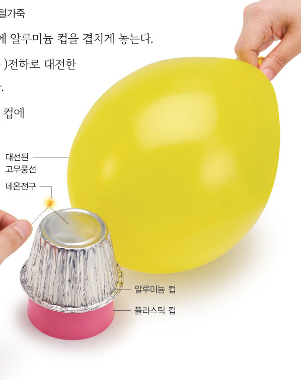
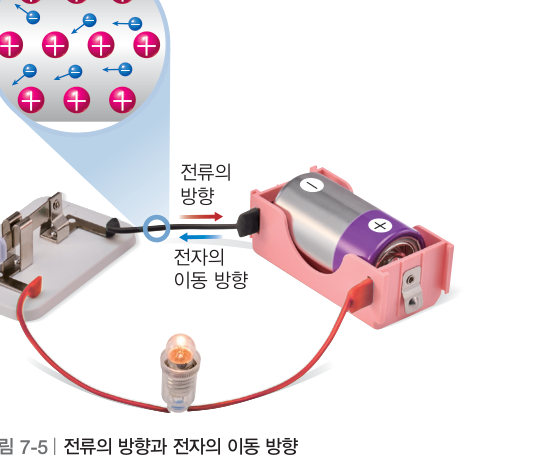

살아있는 교과서 · Ⅶ. 전기와 자기 · 2. 전기 회로와 에너지 · 01 235~237쪽
전하의 흐름, 전류
전기 회로에서 전구에 불이 켜지는 까닭은 무엇일까? 대전된 풍선으로 네온전구를 번쩍 켜 보고, 회로 돋보기로 전자의 이동 방향과 전류의 방향을 비교한 뒤, 물의 흐름 모형으로 전기 회로를 설명해 보자.
🎯 이 단원을 배우면 — 전기 회로에서 전류를 모형으로 설명할 수 있다.
두 번째 블록팬이 작동할 때 전기 회로에서 어떤 일이 일어날까? 235쪽
“공기 청정기의 전원을 켜니, 안에 있는 팬이 돌기 시작했어.” “팬이 돌면서 실내 공기를 빨아들이고, 필터로 거른 깨끗한 공기를 다시 바깥으로 내보내 주고 있어.” 이 단원의 힌트 조각(전류 · 전압과 저항 · 저항의 연결 · 전기 에너지와 소비 전력)을 모으면 전류의 작용을 이해하고, 전기 에너지가 전환됨을 알아내어 두 번째 블록 질문에 답할 수 있다.
이 단원과 관련해 이미 알고 있는 것에 표시해 보자.
해 보기 · 과학적 증거에 기반하여 주장하기네온전구에 불이 켜지는 까닭 알아보기 236쪽
전구와 전지를 연결하여 전기 회로를 만들면 전구에 불이 켜진다. 다음 활동으로 전구에 불이 켜지는 까닭을 알아보자.

236쪽① 플라스틱 컵 위에 알루미늄 컵을 겹친다. ② (-)로 대전된 고무풍선을 알루미늄 컵에 댄다. ③ 네온전구의 한쪽 극을 손으로 잡고 다른 쪽 극을 알루미늄 컵에 댄다.
가상 실험번쩍! 네온전구
먼저 풍선을 대전시켜 알루미늄 컵에 대 보세요.
⚠️ 알루미늄 컵에 손이 닿지 않게 주의한다.
1네온전구를 알루미늄 컵에 대면 네온전구에 . 이는 알루미늄 컵에 모인 가 네온전구를 통해 손 쪽으로 이동하기 때문이다.
💬네온전구에 불이 켜지는 까닭을 전하의 이동과 관련지어 이야기해 보자.
교과서전기 회로에서 전류는 어떻게 흐를까? 237쪽
대전된 고무풍선을 갖다 댄 알루미늄 컵에 네온전구를 접촉하면 네온전구에 순간적으로 불이 켜진다. 이는 고무풍선의 전하가 알루미늄 컵을 통해 네온전구로 흐르기 때문이다. 이와 같은 전하의 흐름을 전류라고 하며, 단위는 A(암페어)를 사용한다.
전구와 전지를 연결한 전기 회로에서는 전자가 도선을 따라 전지의 (-)극에서 (+)극으로 이동한다. 이러한 전자의 이동으로 회로에 전류가 흐르면서 전구에 불이 켜진다. 전류의 방향은 전지의 (+)극에서 (-)극으로 흐른다고 정하여 사용하고 있다. 따라서 전류의 방향과 전자의 이동 방향은 반대이다.

그림 7-5전류의 방향과 전자의 이동 방향
회로 돋보기전자는 어디로, 전류는 어디로?
스위치를 닫고 [전자 보기] / [전류 방향 보기]를 바꿔 보자. 전지의 긴 쪽이 (+)극이에요.
1그림에서 전자는 전지의 방향으로 이동하고, 전류는 전지의 방향으로 흐른다.
교과서물의 흐름 모형과 전기 회로 237쪽
전기 회로에서 전류는 물의 흐름에 비유할 수 있다. 물이 흐르면서 물레방아를 돌리는 것처럼 전기 회로에서는 전류가 흐르면서 전구에 불을 켠다. 펌프가 물을 퍼 올려 물이 계속 흐르는 것처럼 전지가 전자를 계속 이동하게 하여 전류가 흐른다.
그림 7-6물의 흐름 모형과 전기 회로
1두 그림에서 역할이 비슷한 것끼리 연결해 보자.
펌프
물레방아
수도꼭지
물이 흐르는 관(파이프)
물의 흐름
🧩 두 번째 블록 조각
공기 청정기의 전원을 켜면 내부의 전기 회로에 이/가 흘러 팬이 돌아간다.
스스로 확인하기236쪽 학습 목표를 달성했는지 확인해 보자 237쪽
1개념 확인 전하의 흐름을 (이)라고 하며, 단위는 을/를 사용한다.
2사고력 네온전구의 한쪽 극을 손으로 잡고 대전된 고무풍선을 갖다 댄 알루미늄 컵에 다른 쪽 극을 대면 순간적으로 네온전구에 불이 켜졌다가 꺼진다. 그 까닭을 설명해 보자.
5분 테스트전하의 흐름, 전류
1전하의 흐름을 라고 하고, 단위는 를 사용한다.
3전구가 연결된 전기 회로에서 전류는 전지의 으로, 전자는 으로 이동한다.
✔옳으면 O, 옳지 않으면 X
⑤ 전자가 도선을 따라 전지의 (-)극에서 (+)극으로 이동한다.
⑥ 전류는 전지의 (-)극에서 (+)극으로 흐른다.
⑦ 전류의 방향은 전자의 이동 방향과 반대이다.
8물의 흐름을 전기 회로에 비유할 때 펌프는 , 물레방아는 , 물의 흐름 방향은 에 해당한다.
스스로 정리하기전류 250쪽
1전류
⑴ 전류: 전하의 흐름, 단위는 ⑵ 전류의 방향: 전지의 극에서 극으로 흐른다. 전자의 이동 방향은 전류의 방향과 이다.
평가 기준
스스로 평가
지식·이해 전기 회로에서 전류를 모형으로 설명할 수 있는가?
과정·기능 네온전구에 불이 켜지는 까닭을 전하의 이동과 관련지어 설명했는가?
가치·태도 네온전구에서 일어나는 현상에 호기심을 가졌는가?
제출학생 정보 · 제출하기
모든 활동을 마친 뒤 제출하면 전체가 한 번에 채점되고 피드백이 나타나요. 답안은 선생님 스프레드시트(중2 탭)에 기록돼요.